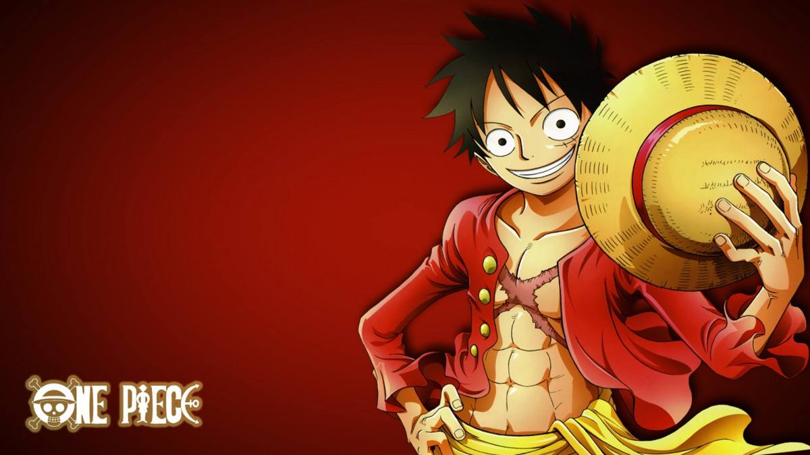

| 首页 | 路飞界面 | 家庭关系 | 旗下海贼 | 社会关系 | 彩蛋 |
|  | 蒙奇·D·路飞 | |||
| 简介 | 角色背景 | 角色形象 | 角色能力 | 人际关系 |
| 蒙奇·D·路飞，日本漫画《航海王》及其衍生作品中的男主角。绰号“草帽”路飞，是草帽一伙船长，草帽大船团大船长，四皇、极恶的世代之一。橡胶果实（人人果实·幻兽种·尼卡形态）能力者，悬赏金30亿贝里。梦想是找到传说中的大秘宝（ONE PIECE），成为海贼王。 | 角色原型 尾田荣一郎根据日本漫画《龙珠》而构思出来路飞这一角色 。尾田在连载《航海王》之前，还推出过短篇海贼漫画《冒险的黎明》（ROMANCE DAWN），该漫画的主角也叫路飞，是《航海王》中路飞的雏形 名字来源
作者想法
|
出身东海哥亚王国风车村的青年海贼，是海军英雄蒙奇·D·卡普的孙子，革命军首领蒙奇·D·龙的儿子，波特卡斯·D·艾斯、萨博的义弟，“极恶的世代”之一，集结香波地群岛的十一超新星之一。悬赏金30亿贝里，被称作“草帽小子”。 小时候因误食了橡胶果实（人人果实·幻兽种·尼卡形态），而获得了如橡胶般自由伸缩的能力 。在香克斯的启蒙下，萌生了找到传说中的One Piece，成为海贼王的梦想 [口头禅是“我是要成为海贼王的男人” 。 17岁时出海，在旅程中集结伙伴组成了草帽一伙，经历了无数艰难险阻，却在香波地群岛因惹怒天龙人而导致团队分散 。后加入顶上战争试图解救义兄艾斯，失败后在西尔巴兹·雷利的指导下进行了2年的修行 。19岁时，与伙伴在香波地群岛重聚，扬帆起航步入新世界 。在新世界与特拉法尔加·罗结盟，并在德雷斯罗萨将超过5000人的草帽大船团收为麾下 。在佐乌与毛茸茸公国、光月家族结为忍者海盗毛皮武士同盟，前往和之国大战四皇凯多 。击败凯多后悬赏金来到30亿贝里，取代凯多的四皇位置，成为新的海上皇帝。 |
路飞是动物系“人人果实·幻兽种·尼卡形态”能力者（另一个名字：橡胶果实），能力者身体具有橡胶的特性，在战斗中路飞利用发挥了橡胶这一体质，并在不断的战斗中升级自己的招式，可以用任何方式战斗，无论走到哪里，他都能让人们绽放笑容。尼卡是“解放的战士”，也被称为“太阳神尼卡”。 | 家庭关系旗下海贼社会关系
|